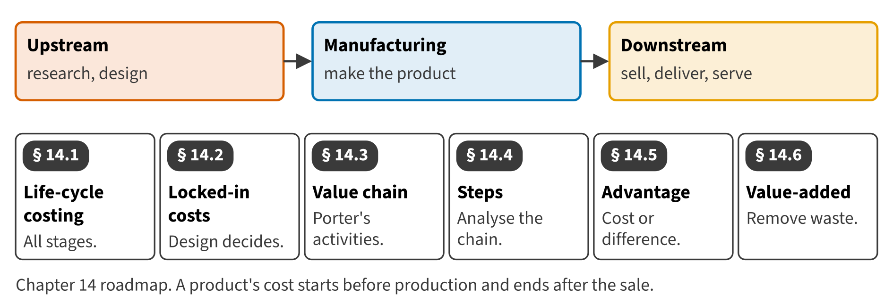

Part III · Costing systems and business processes · Chapter 14
Life-Cycle Costing and Value Chain Analysis
تكاليف دورة حياة المنتج وتحليل سلسلة القيمة
In 2027 Tahini & Spreads spent $250,000 developing a sugar-free halva before a single tray was made. In its first year on the market, the product report will show a loss. Should the division still launch it? This chapter answers with the whole life of the product in view.

Start here
Then
What this chapter is tested on
| LOS | Official statement (ICMA, 2024) | In plain words | Depth here |
|---|---|---|---|
| D.2.j | demonstrate an understanding of the concept of life-cycle costing and the strategic value of including upstream costs, manufacturing costs, and downstream costs | Explain life-cycle costing and why upstream, manufacturing and downstream costs should be counted together. | Full treatment + Extended Example |
| D.5.a | define value chain analysis | Define value chain analysis. | Full treatment |
| D.5.b | identify the steps in value chain analysis | List the steps in value chain analysis. | Full treatment |
| D.5.c | explain how value chain analysis is used to better understand a company’s competitive advantage | Explain how value chain analysis shows a company's competitive advantage. | Full treatment |
| D.5.d | define, identify, and provide examples of a value-added activity and explain how the value-added concept is related to improving performance | Define and give examples of value-added activities, and link them to better performance. | Full treatment |
The official statements are quoted from the ICMA Learning Outcome Statements (effective September 1, 2024). The plain-words column restates them in simpler English. The exam may test any outcome up to Level C.
What you already know
Chapters 12 and 13 traced overhead to activities, products and customers. This chapter widens the view: across the years of a product's life, and across all the activities of a business.
The 11 key terms
Every scene has Check Answers and Try Again. Try Again reshuffles rather than revealing. When you are wrong, the first thing you read is the reason for the option you chose, taken from the book's own explanations. Progress is saved in this browser.